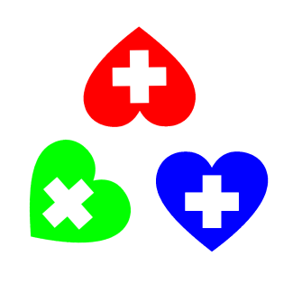
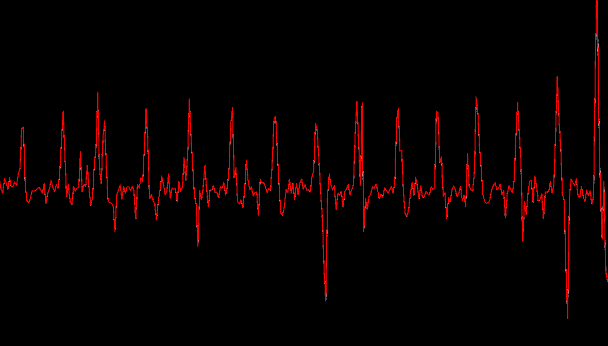

CV-HeartRate

An opensource project that measures real time heart rate.
Why The Heck do I Need this?
- Realtime heart rate monitoring
- Arduino, ESP, Wemos Projects
- Fixed Heart Beat Sensor
- I have a dedicated server for IoT for CPU/GPU intensive tasks (The house of FUTURE!!)
How Does it Work?
Step 1: Assumptions:
- Finger on the camera.
- Flashlight is on.
Step 2: Calculate Image brightness over time.
Step 3:
Calculate derivatives and find wavelength, that is time between R-R Peak.
Step 4:
Drop values with similar standard deviation (Trust me you don't want heart beat of 600 bpm :D )
Examples
Reading Local Files
from heartbeat import HeartBeat
beat = HeartBeat("3gp/mp4/whatever")
beat.get_brightness_from_video()
beat = beat.analyze_heart_beat()
print(beat)
Reading Video Streams
from heartbeat import CamBeat
beat = CamBeat("3gp/mp4/whatever")
beat.get_brightness_from_video()
beat = beat.analyze_heart_beat()
print(beat)
How it sees your heart beat.

Camdroid
Just fire up the app on android and get it's ip.
API
HeartBeat(filename : str)